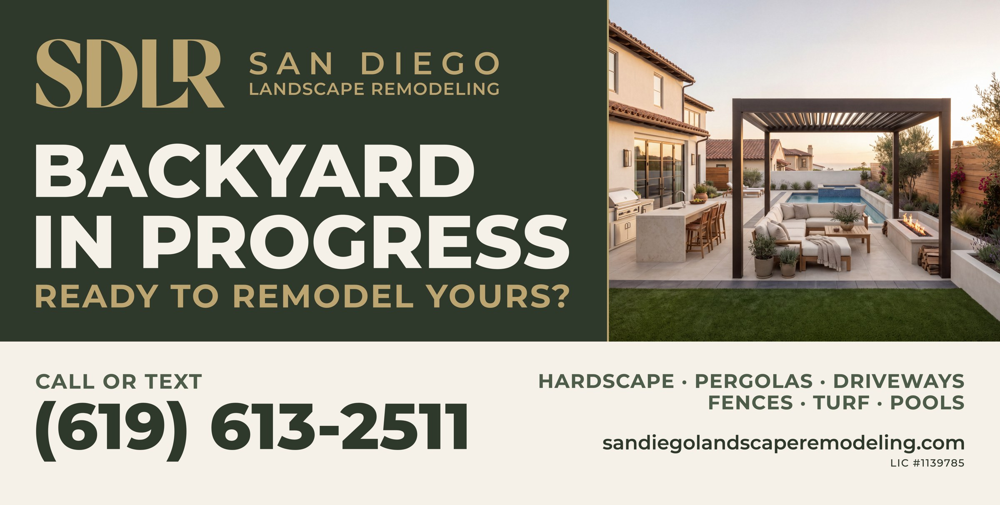
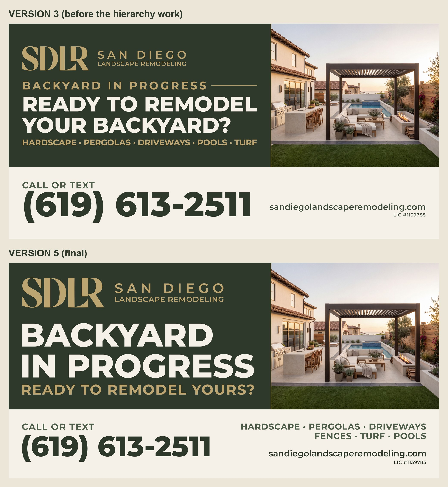
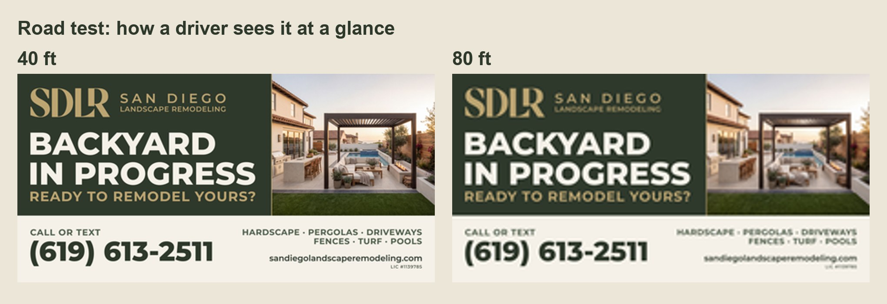

The same banner, reorganized so it reads in the right order from the road. Version 3 had five things in its top corner fighting for attention, the phone number louder than the message, and the company name in letters about an inch tall. Version 4 gives every line one job.



| Backyard in progress | Capital letters 5.1 in tall. Reads from about 50 ft. |
| Phone number | 4.4 in. Reads from about 45 ft. |
| Ready to remodel yours? | 2.2 in, the same width as the headline. |
| Logo | 6.7 in tall: "San Diego" 1.8 in, "Landscape Remodeling" 1.2 in. |
| Call or text | 1.4 in. |
| Services, website | 1.3 in. Walking past. |
| Finished size | 96 × 48 in (8 × 4 ft). A 96 × 60 in (8 × 5 ft) file is also ready in Drive. |
| File | PDF, 97 × 49 in: 0.5 in of bleed on every side. Type and logo are vector, fonts embedded; the photo is embedded at 8499 × 7424 px (about 224 dpi). |
| Material | Mesh vinyl (wind on a fence), hemmed edges, grommets every 2 ft, zip-tied to the fence. |
| Colors | Sage-800 #2E382B, sage #4E5D4A, gold #BDA572, paper #F5F1E8. No Pantone numbers yet: ask for a printed proof and check the greens do not go grey or the gold brassy. |
The 8 × 5 ft PDF, 100 dpi PNGs, the full-size photo and the generator are in Drive under
02 Clients/san-diego-landscape-remodeling/assets/print-ready/fence-banner/.